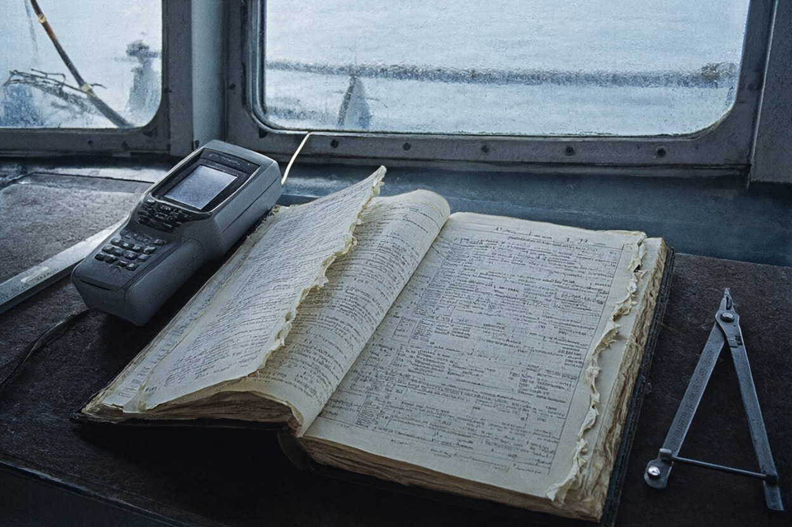
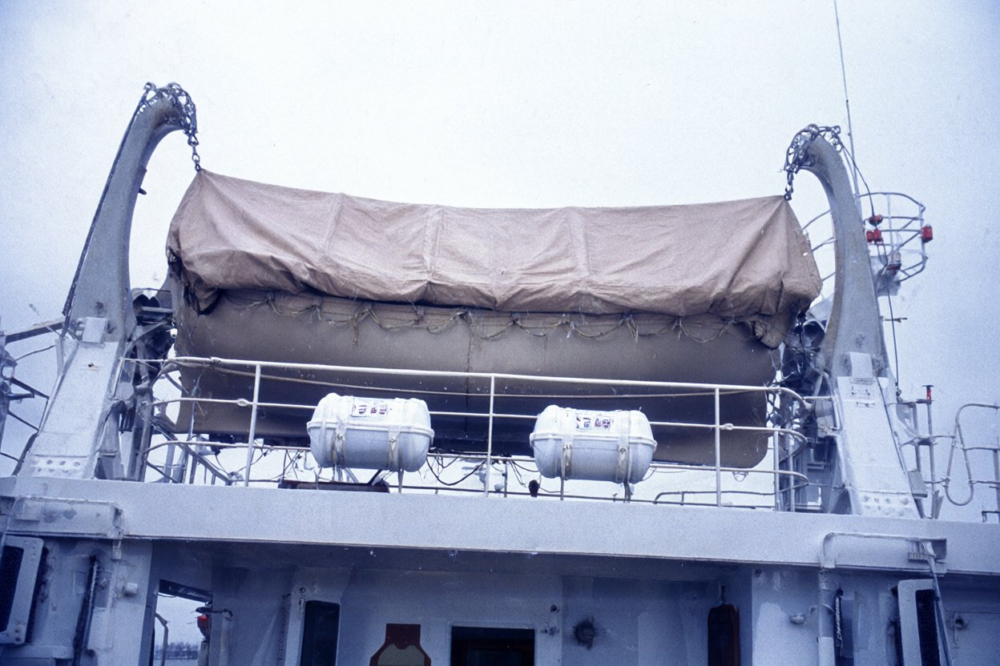

Бюро аварійних комісарів «Аварком-Південь»270011, м. Одеса, вул. Канатна, 22, оф. 5 · тел./факс (0482) 24-17-63
Акт огляду № 44/98
(т/х «Ліман Стар», прапор Беліз, позивний V3PL7, — на мілині Вовча банка)
25 листопада 1998 р., 09:30–13:00Вовча банка, 0,7 милі на ЗПдЗ від маяка Вовча коса
Справа № 98/117.Присутні: аварійний комісар бюро (А. к. гр. № 1); інспектор Інспекції державного
портового нагляду порту Очаків Бабенко Ю.; представник судновласника — суперінтендант ТОВ «Акватрейд-Сервіс»
Лук'яненко О. В. Доставлені на борт портовим катером з Очакова; висадка з катера по штормтрапу правого борту.
Погода: вітер З 6–8 м/с, хмарно, хвиля до 1 м. Огляд проведено при денному світлі, у приміщеннях — з ліхтарем і
спалахом. Судно знеструмлене, на борту людей немає.
Оглянуто:
Корпус і положення судна. Судно лежить корпусом на ґрунті, носом приблизно на північний схід, з креном
близько 8° на правий борт (за креномером на містку). У районі 2-го трюму по правому борту нижче ватерлінії —
пробоїни, оглянуто зовні з катера частково. Трюм № 2 заповнений водою до рівня моря. Машинне відділення
затоплене частково, вода вище плит настилу. Хвиля б'є в лівий борт.
Авторульовий — перемикач режимів у положенні «ручне».
Машинний телеграф — у положенні «стоп».
GPS-приймач Furuno — у штатному місці над штурманським столом, без видимих пошкоджень. Живлення
подано від аварійного акумулятора містка (за згодою інспектора). Прилад увімкнувся, пройшов самоперевірку
без повідомлень про помилки, через кілька хвилин визначив місце. У пам'яті приладу останнє збережене місце —
о 01:52 20.11.1998: 01:52 · 46°31,62′N · 031°27,88′E. Справний (Фото 1).
Радіолокатор, УКХ-радіостанція — знеструмлені, зовнішніх пошкоджень немає.
Штурманський стіл. На столі — навігаційна карта району, паралельна лінійка, циркуль. У шухляді штурманського стола під картами виявлено чорновий
вахтовий журнал судна (той, що капітан, за довідкою інспекції, назвав «змитим водою на містку»). Журнал
сухий, не пошкоджений водою. На корінці — сліди двох вирваних аркушів після стор. 40: залишки паперу по лінії
зшивки, нитка розірвана. Записи стор. 40 закінчуються 19.11 о 20:00 (зміна вахти). Далі записи починаються зі
стор. 43 о 02:40 20.11, почерком капітана (під записом 07:10 — підпис «Гаврилюк»):
«02:40 Спущено шлюпку л/б, 8 чол. під ком. С/П. КМ і СМ на борту», «03:10 С/П по рації: шлюпку перекинуло, 2/П
Савчук змитий», «03:12 порт повідомлено», «03:58 порт: буксир 05:30–06:00», «07:10 буксир «Кремінь» підійшов».
Записів після 07:10 немає. Журнал вилучено бюро за описом у присутності інспектора, передано інспектору
Бабенку Ю. на зберігання (Фото 1).
Судновий журнал (Deck Log) на борту відсутній — за словами інспектора, капітан забрав суднові
документи з собою 20.11.
Шлюпкова палуба. Шлюпка правого борту — на шлюпбалках, закріплена по-похідному, під брезентом,
найтови цілі. Обидва рятувальні плоти — у контейнерах на штатних місцях на леєрах, пломби цілі, гідростати на
місці (Фото 2). Лівобортної шлюпки немає, шлюпталі спущено, гаки вільні (шлюпка — на березі коси).
Рятувальні жилети. У рундуку на шлюпковій палубі — 6 рятувальних жилетів з трафаретом «LIMAN STAR».
У каютах і на містку жилетів не виявлено. За табелем постачання судна (копію надав представник
судновласника) — 16 жилетів.
Каюта капітана. Двері не замкнені. На столі — дві чашки з залишками кави, попільничка, повна
недопалків. Ліжко застелене. Сейф зачинений, не відкривали.

Фото 1. Штурманський стіл: чорновий журнал, розгорнутий на стор. 40/43 (біля корінця —
залишки двох вирваних аркушів); GPS-приймач Furuno.

Фото 2. Шлюпкова палуба, правий борт: шлюпка на шлюпбалках, контейнери плотів на
леєрах.
Висновків цей акт не містить.
Аварійний комісар бюро (гр. № 1)підпис
Інспектор ІДПН порту ОчаківЮ. Бабенко
Представник судновласника — з актом ознайомленийО. Лук'яненко